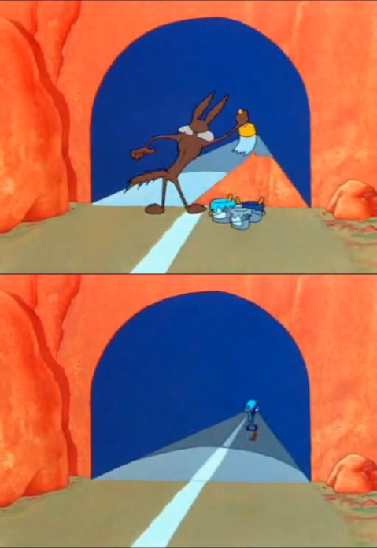
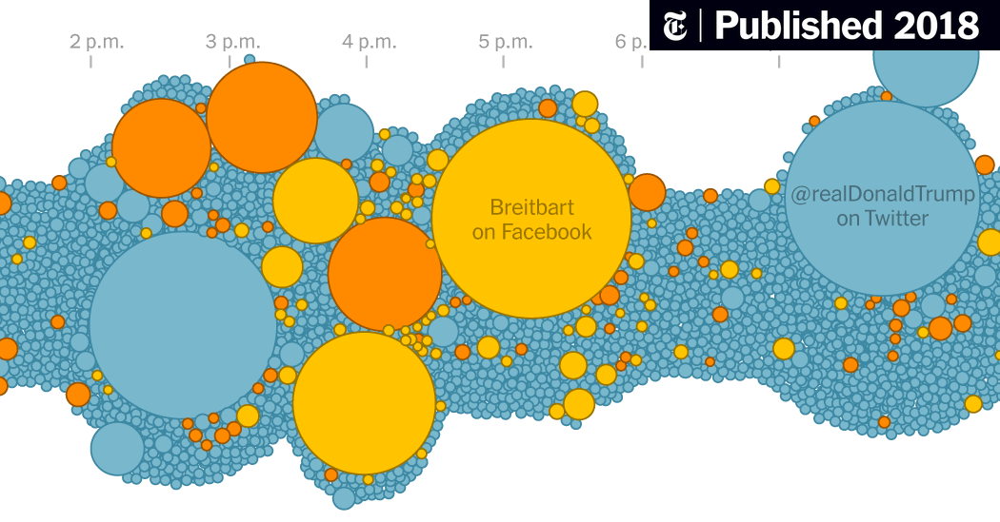

01 - Introducción a la visualización
Visualización gráfica para IA
2026-01-14
Acerca del curso
- Horario: Lunes y Miércoles
- 9 a 11 hrs
- 11 a 13 hrs
- Docente: Dra. Dora Alvarado
- Email: 27382@iberoleon.edu.mx; doraelisa.alvaradocarrillo@iberoleon.edu.mx
- Email: 27382@iberoleon.edu.mx; doraelisa.alvaradocarrillo@iberoleon.edu.mx
- Avisos, exámenes, tareas en Moodle.

Motivación
- Dedicamos una gran parte de nuestra atención a tareas relacionadas con la visión.
- La casa en la que vivimos, el auto que conducimos, la ropa que usamos, suelen elegirse por sus cualidades visuales.
- Alrededor del 50% de las neuronas están asociadas con la visión.
- El sistema visual humano tiene un ancho de banda equivalente a gigabits, permitiendo:
- percepción muy rápida,
- reconocimiento de patrones,
- identificación de relaciones espaciales.


Video: https://www.youtube.com/watch?v=IQJL3htsDyQ

Video: https://www.youtube.com/watch?v=Cuo8eq9C3Ec
Definición de visualización
Tip
- La visualización es el proceso de transformar datos en una forma visual que permite al espectador observar, explorar, darle sentido y comprender la información (Cambridge Dictionary).
Arte rupestre en Arroyo Seco, Gto. Imagen de expansion.mx
 Mapa diseñado por Claudius Ptolemy (entre 85 y 165 A.C.), fue utilizado como referencia hasta el siglo XV. Imagen de interaction-design.org
Mapa diseñado por Claudius Ptolemy (entre 85 y 165 A.C.), fue utilizado como referencia hasta el siglo XV. Imagen de interaction-design.org
Definición de visualización gráfica
Tip
- La visualización gráfica es el proceso de convertir datos descriptivos (números, ecuaciones, geometría) en un conjunto de primitivas gráficas (formas, líneas, polígonos, etc.) para producir imágenes estáticas o animadas utilizando un medio computacional (Schroeder y colegas, The Visualization Toolkit).
 El conejo de Stanford, consiste de ~70k triángulos, usado para probar algoritmos gráficos. Imagen de researchgate.net
El conejo de Stanford, consiste de ~70k triángulos, usado para probar algoritmos gráficos. Imagen de researchgate.net
 Seguimiento del slogan republicano #JobsNotMobs, en las elecciones de mitad de periodo en EUA, 2018. Imagen de nytimes.com